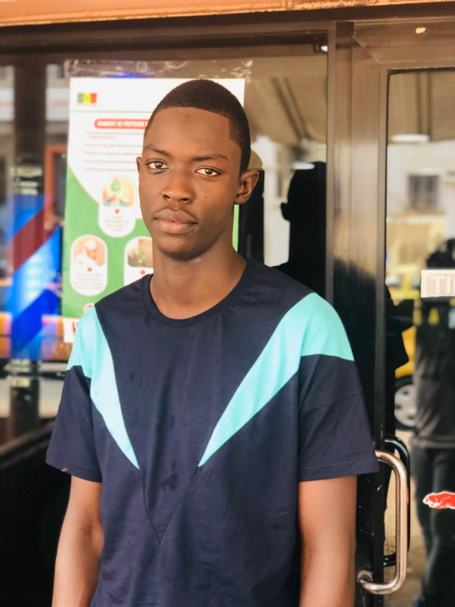

Les membres du groupe


Construire une bibliothèque de fonction, qui permettra le dessin de figures en utilisant l’outil turtle de python. Construire une maquette de pont et la façade d’un bâtiment.
Sujet
A la fin de votre formation un cabinet de génie civil vous propose un contrat de consultance dans le dessein de concevoir un module spécialisé en dessin industriel. Principalement le module doit faciliter au cabinet, la représentation en 2D de certains ouvrages, avec des figures géométriques simples. Il s’agira de construire une bibliothèque de fonction, qui permettra le dessin de figures en utilisant l’outil turtle de python.